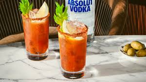

A Bloody Mary is a cocktail containing vodka, tomato juice, and other spices and flavorings including Worcestershire sauce, hot sauces, garlic, herbs, horseradish, celery, olives, pickled vegetables, salt, black pepper, lemon juice, lime juice and celery salt.
Place the ice in a large jug. Measure the vodka, tomato juice and lemon juice and pour it straight onto the ice.
Add 3 shakes of Worcestershire sauce and Tabasco (or more if you like it very spicy) and a pinch of celery salt and pepper. Stir until the outside of the jug feels cold, then strain the cocktail into 2 tall glasses.
Top up with fresh ice, add a celery stick and lemon slice to both glasses and enjoy.